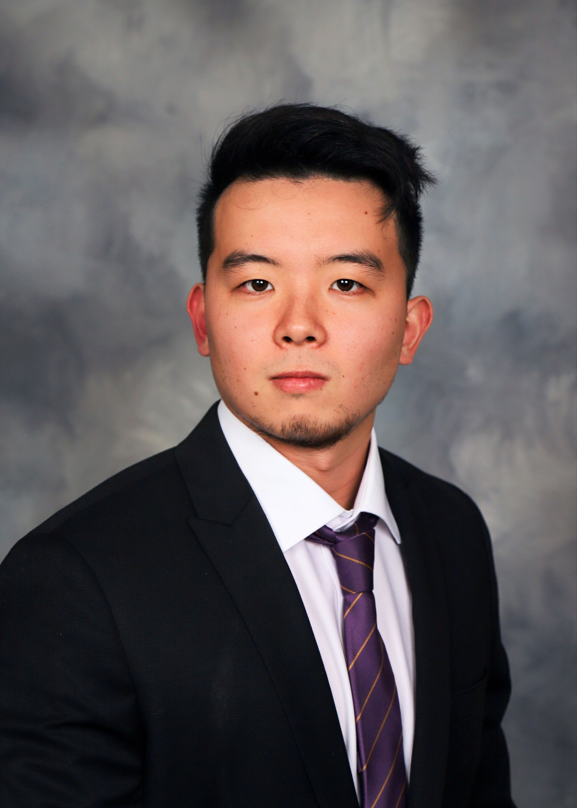

Develops graph-native modeling and scientific machine learning, including differentiable ODE solvers in Ozone.
Education
- PhD, Mechanical and Aerospace Engineering
UC San Diego · 2022–present - MS, Mechanical Engineering
UC San Diego · 2021 - BS, Mechanical Engineering
UC San Diego · 2020
Research connections
Related to Mark Z. Sperry
Methods
Papers
- Marius L. Ruh, Michael A. P. Warner, Luca Scotzniovsky, Andrew H. Fletcher, Mark Z. Sperry, John T. Hwang. System-Level, Large-Scale Multidisciplinary Design Optimization of an Air Taxi Concept. Journal of Aircraft, 2026.DOIPDF
@article{ruh2026system, author = {Marius L. Ruh and Michael A. P. Warner and Luca Scotzniovsky and Andrew H. Fletcher and Mark Z. Sperry and John T. Hwang}, title = {System-Level, Large-Scale Multidisciplinary Design Optimization of an Air Taxi Concept}, journal = {Journal of Aircraft}, year = {2026}, pages = {1-24}, doi = {10.2514/1.c038533}, url = {https://doi.org/10.2514/1.c038533}, note = {Metadata verification: Crossref DOI} } - Mark Sperry, John T. Hwang. Multifidelity Surrogate Modeling for 3D Aerodynamic Flow Field Prediction Using Graph Neural Networks. AIAA AVIATION 2026 Forum, 2026. Distribution Statement A: Approved for public release; distribution is unlimited. PA# AFRL-2026-2231DOIPDF
@inproceedings{sperry2026multifidelity, author = {Mark Sperry and John T. Hwang}, title = {Multifidelity Surrogate Modeling for 3D Aerodynamic Flow Field Prediction Using Graph Neural Networks}, booktitle = {AIAA AVIATION 2026 Forum}, year = {2026}, doi = {10.2514/6.2026-4802}, url = {https://doi.org/10.2514/6.2026-4802}, note = {Metadata verification: Crossref title} } - Mark Sperry, John T. Hwang. Hybrid Training of Physics-Informed Neural Networks with Approximate Supervision. AIAA AVIATION 2025 Forum, 2025.PDF
@inproceedings{sperry2025hybrid, author = {Mark Sperry and John T. Hwang}, title = {Hybrid Training of Physics-Informed Neural Networks with Approximate Supervision}, booktitle = {AIAA AVIATION 2025 Forum}, year = {2025} } - Mark Z. Sperry, John T. Hwang. Ozone: an open-source ordinary differential equation solver for gradient-based optimization. Optimization and Engineering, 2025.DOIPDF
@article{sperry2025ozone, author = {Mark Z. Sperry and John T. Hwang}, title = {Ozone: an open-source ordinary differential equation solver for gradient-based optimization}, journal = {Optimization and Engineering}, year = {2025}, volume = {26}, number = {3}, pages = {2145-2183}, doi = {10.1007/s11081-025-09967-y}, url = {https://doi.org/10.1007/s11081-025-09967-y}, note = {Metadata verification: Crossref title} } - Sebastiaan P. van Schie, Marius L. Ruh, Andrew H. Fletcher, Michael Warner, Mark Sperry, Luca Scotzniovsky, Nicholas C. Orndorff, Ru Xiang, Jiayao Yan, Han Zhao, Joshua Krokowski, Jiun-Shyan Chen, Darshan Sarojini, Hyunjune Gill, Seongkyu Lee, Andrew C. Tagg, Ryan Anderson, Eric Green, Cibin Joseph, Andrew Ning, Zeyu Cheng, Zhi Cao, Chunting Mi, Alexandre T. Guibert, Ashley Cronk, Alicia A. Kim, Shirley Meng, Christopher Silva, John T. Hwang. Large-Scale Distributed Multidisciplinary Design Optimization of the NASA Lift-Plus-Cruise Air Taxi Concept. AIAA SCITECH 2025 Forum, 2025.DOIPDF
@inproceedings{vanschie2025large, author = {Sebastiaan P. van Schie and Marius L. Ruh and Andrew H. Fletcher and Michael Warner and Mark Sperry and Luca Scotzniovsky and Nicholas C. Orndorff and Ru Xiang and Jiayao Yan and Han Zhao and Joshua Krokowski and Jiun-Shyan Chen and Darshan Sarojini and Hyunjune Gill and Seongkyu Lee and Andrew C. Tagg and Ryan Anderson and Eric Green and Cibin Joseph and Andrew Ning and Zeyu Cheng and Zhi Cao and Chunting Mi and Alexandre T. Guibert and Ashley Cronk and Alicia A. Kim and Shirley Meng and Christopher Silva and John T. Hwang}, title = {Large-Scale Distributed Multidisciplinary Design Optimization of the NASA Lift-Plus-Cruise Air Taxi Concept}, booktitle = {AIAA SCITECH 2025 Forum}, year = {2025}, doi = {10.2514/6.2025-0362}, url = {https://doi.org/10.2514/6.2025-0362}, note = {Metadata verification: Crossref title} } - Bingran Wang, Nicholas C. Orndorff, Mark Sperry, John T. Hwang. Extension of graph-accelerated non-intrusive polynomial chaos to high-dimensional uncertainty quantification through the active subspace method. Aerospace Science and Technology, 2025.DOIPDF
@article{wang2025extension, author = {Bingran Wang and Nicholas C. Orndorff and Mark Sperry and John T. Hwang}, title = {Extension of graph-accelerated non-intrusive polynomial chaos to high-dimensional uncertainty quantification through the active subspace method}, journal = {Aerospace Science and Technology}, year = {2025}, volume = {160}, pages = {110074}, doi = {10.1016/j.ast.2025.110074}, url = {https://doi.org/10.1016/j.ast.2025.110074}, note = {Metadata verification: Crossref DOI} } - Marius L. Ruh, Andrew Fletcher, Darshan Sarojini, Mark Sperry, Jiayao Yan, Luca Scotzniovsky, Sebastiaan P. van Schie, Michael Warner, Nicholas C. Orndorff, Ru Xiang, Anugrah J. Joshy, Han Zhao, Joshua Krokowski, Hyunjune Gill, Seongkyu Lee, Zeyu Cheng, Zhi Cao, Chris Mi, Christopher Silva, Lauren Wolfe, Jiun-Shyan Chen, John T. Hwang. Large-scale multidisciplinary design optimization of a NASA air taxi concept using a comprehensive physics-based system model. AIAA SCITECH 2024 Forum, 2024.DOIPDF
@inproceedings{ruh2024large, author = {Marius L. Ruh and Andrew Fletcher and Darshan Sarojini and Mark Sperry and Jiayao Yan and Luca Scotzniovsky and Sebastiaan P. van Schie and Michael Warner and Nicholas C. Orndorff and Ru Xiang and Anugrah J. Joshy and Han Zhao and Joshua Krokowski and Hyunjune Gill and Seongkyu Lee and Zeyu Cheng and Zhi Cao and Chris Mi and Christopher Silva and Lauren Wolfe and Jiun-Shyan Chen and John T. Hwang}, title = {Large-scale multidisciplinary design optimization of a NASA air taxi concept using a comprehensive physics-based system model}, booktitle = {AIAA SCITECH 2024 Forum}, year = {2024}, doi = {10.2514/6.2024-0771}, url = {https://doi.org/10.2514/6.2024-0771}, note = {Metadata verification: Crossref DOI} } - Mark Sperry, Kavish Kondap, John T. Hwang. Static Task Scheduling for Parallel Execution of Large-Scale Multidisciplinary Design Optimization Models. AIAA SCITECH 2024 Forum, 2024.DOIPDF
@inproceedings{sperry2024static, author = {Mark Sperry and Kavish Kondap and John T. Hwang}, title = {Static Task Scheduling for Parallel Execution of Large-Scale Multidisciplinary Design Optimization Models}, booktitle = {AIAA SCITECH 2024 Forum}, year = {2024}, doi = {10.2514/6.2024-1803}, url = {https://doi.org/10.2514/6.2024-1803}, note = {Metadata verification: Crossref DOI} } - Bingran Wang, Mark Sperry, Victor E. Gandarillas, John T. Hwang. Accelerating Model Evaluations in Uncertainty Propagation on Tensor Grids Using Computational Graph Transformations. Aerospace Science and Technology 145 (2024), p. 108843, 2024.PDF
@article{wang2023accelerating, author = {Bingran Wang and Mark Sperry and Victor E. Gandarillas and John T. Hwang}, title = {Accelerating Model Evaluations in Uncertainty Propagation on Tensor Grids Using Computational Graph Transformations}, journal = {Aerospace Science and Technology 145 (2024), p. 108843}, year = {2023}, note = {Metadata verification: Crossref unavailable: HTTPError} } - Bingran Wang, Nicholas C. Orndorff, Mark Sperry, John T. Hwang. A gradient-enhanced univariate dimension reduction method for uncertainty propagation. Aerospace Science and Technology, 2024.DOIPDF
@article{wang2024gradient, author = {Bingran Wang and Nicholas C. Orndorff and Mark Sperry and John T. Hwang}, title = {A gradient-enhanced univariate dimension reduction method for uncertainty propagation}, journal = {Aerospace Science and Technology}, year = {2024}, volume = {155}, pages = {109602}, doi = {10.1016/j.ast.2024.109602}, url = {https://doi.org/10.1016/j.ast.2024.109602}, note = {Metadata verification: Crossref DOI} } - Bingran Wang, Nicholas C. Orndorff, Mark Sperry, John T. Hwang. A gradient-enhanced univariate dimension reduction method for uncertainty propagation. AIAA SCITECH 2024 Forum, 2024.DOIPDF
@inproceedings{wang2024gradienta, author = {Bingran Wang and Nicholas C. Orndorff and Mark Sperry and John T. Hwang}, title = {A gradient-enhanced univariate dimension reduction method for uncertainty propagation}, booktitle = {AIAA SCITECH 2024 Forum}, year = {2024}, doi = {10.2514/6.2024-1234}, url = {https://doi.org/10.2514/6.2024-1234}, note = {Metadata verification: Crossref DOI; conference version distinct from related journal publication} } - Ryan M. Anderson, Andrew Ning, Ru Xiang, Sebastiaan P. C. van Schie, Mark Sperry, Darshan Sarojini, David Kamensky, John T. Hwang. Aerostructural Predictions Combining FEniCS and a Viscous Vortex Particle Method FLOWVPM. AIAA SciTech 2023 Forum, 2023.PDF
@inproceedings{anderson2023aerostructural, author = {Ryan M. Anderson and Andrew Ning and Ru Xiang and Sebastiaan P. C. van Schie and Mark Sperry and Darshan Sarojini and David Kamensky and John T. Hwang}, title = {Aerostructural Predictions Combining FEniCS and a Viscous Vortex Particle Method FLOWVPM}, booktitle = {AIAA SciTech 2023 Forum}, year = {2023}, note = {Metadata verification: Crossref unavailable: HTTPError} } - Victor Gandarillas, Anugrah Jo Joshy, Mark Z. Sperry, Alexander K. Ivanov, John T. Hwang. A Graph-Based Methodology for Constructing Computational Models that Automates Adjoint-Based Sensitivity Analysis. Structural and Multidisciplinary Optimization 67.5 (2024), p. 76, 2023.PDF
@article{gandarillas2023graph, author = {Victor Gandarillas and Anugrah Jo Joshy and Mark Z. Sperry and Alexander K. Ivanov and John T. Hwang}, title = {A Graph-Based Methodology for Constructing Computational Models that Automates Adjoint-Based Sensitivity Analysis}, journal = {Structural and Multidisciplinary Optimization 67.5 (2024), p. 76}, year = {2023}, note = {Metadata verification: Crossref unavailable: HTTPError} } - Anugrah Jo Joshy, Ryan Dunn, Mark Sperry, Victor E. Gandarillas, John T. Hwang. An SQP algorithm based on a hybrid architecture for accelerating optimization of large-scale systems. AIAA AVIATION 2023 Forum, 2023.DOIPDF
@inproceedings{joshy2023sqp, author = {Anugrah Jo Joshy and Ryan Dunn and Mark Sperry and Victor E. Gandarillas and John T. Hwang}, title = {An SQP algorithm based on a hybrid architecture for accelerating optimization of large-scale systems}, booktitle = {AIAA AVIATION 2023 Forum}, year = {2023}, doi = {10.2514/6.2023-4263}, url = {https://doi.org/10.2514/6.2023-4263}, note = {Metadata verification: Crossref title} } - Darshan Sarojini, Marius L. Ruh, Mark Sperry, Jiayao Yan, Andrew Fletcher, Anugrah Jo Joshy, Luca Scotzniovsky, Alexander Ivanov, Nicholas Orndorff, Victor Gandarillas, Isaac Asher, Jeff Chambers, Hyunjune Gill, Seongkyu Lee, Zeyu Cheng, Gabriel Rodriguez, Shuofeng Zhao, Chunting Mi, Thomas Nascenzi, Timothy Cuatt, Tyler Winter, Alexandre Guibert, Ashley Cronk, Alicia Kim, Shirley Meng, John T. Hwang. Large-Scale Multidisciplinary Design Optimization of an eVTOL Aircraft Using Comprehensive Analysis. AIAA SciTech 2023 Forum, 2023.PDF
@inproceedings{sarojini2023large, author = {Darshan Sarojini and Marius L. Ruh and Mark Sperry and Jiayao Yan and Andrew Fletcher and Anugrah Jo Joshy and Luca Scotzniovsky and Alexander Ivanov and Nicholas Orndorff and Victor Gandarillas and Isaac Asher and Jeff Chambers and Hyunjune Gill and Seongkyu Lee and Zeyu Cheng and Gabriel Rodriguez and Shuofeng Zhao and Chunting Mi and Thomas Nascenzi and Timothy Cuatt and Tyler Winter and Alexandre Guibert and Ashley Cronk and Alicia Kim and Shirley Meng and John T. Hwang}, title = {Large-Scale Multidisciplinary Design Optimization of an eVTOL Aircraft Using Comprehensive Analysis}, booktitle = {AIAA SciTech 2023 Forum}, year = {2023}, note = {Metadata verification: Crossref unavailable: HTTPError; numeric collision guard applied} } - Mark Sperry, Kavish Kondap, John T. Hwang. Automatic adjoint sensitivity analysis of models for large-scale multidisciplinary design optimization. AIAA AVIATION 2023 Forum, 2023.DOIPDF
@inproceedings{sperry2023automatic, author = {Mark Sperry and Kavish Kondap and John T. Hwang}, title = {Automatic adjoint sensitivity analysis of models for large-scale multidisciplinary design optimization}, booktitle = {AIAA AVIATION 2023 Forum}, year = {2023}, doi = {10.2514/6.2023-3721}, url = {https://doi.org/10.2514/6.2023-3721}, note = {Metadata verification: Crossref title} } - Bingran Wang, Nicholas C. Orndorff, Mark Sperry, John T. Hwang. High-Dimensional Uncertainty Quantification Using Graph-Accelerated Non-Intrusive Polynomial Chaos and Active Subspace Methods. AIAA Aviation 2023 Forum, 2023.PDF
@inproceedings{wang2023high, author = {Bingran Wang and Nicholas C. Orndorff and Mark Sperry and John T. Hwang}, title = {High-Dimensional Uncertainty Quantification Using Graph-Accelerated Non-Intrusive Polynomial Chaos and Active Subspace Methods}, booktitle = {AIAA Aviation 2023 Forum}, year = {2023}, note = {Metadata verification: Crossref unavailable: HTTPError} } - Bingran Wang, Mark Sperry, Victor E. Gandarillas, John T. Hwang. Efficient Uncertainty Propagation Through Computational Graph Modification and Automatic Code Generation. AIAA Aviation 2022 Forum, 2022.PDF
@inproceedings{wang2022efficient, author = {Bingran Wang and Mark Sperry and Victor E. Gandarillas and John T. Hwang}, title = {Efficient Uncertainty Propagation Through Computational Graph Modification and Automatic Code Generation}, booktitle = {AIAA Aviation 2022 Forum}, year = {2022}, note = {Metadata verification: source PDF/CV; no DOI recovered} } - Jiayao Yan, Mark Sperry, David Kamensky, John T. Hwang. Dynamic topology optimization of battery packs for eVTOL aircraft under time-dependent loading. AIAA AVIATION 2021 FORUM, 2021.DOIPDF
@inproceedings{yan2021dynamic, author = {Jiayao Yan and Mark Sperry and David Kamensky and John T. Hwang}, title = {Dynamic topology optimization of battery packs for eVTOL aircraft under time-dependent loading}, booktitle = {AIAA AVIATION 2021 FORUM}, year = {2021}, doi = {10.2514/6.2021-3068}, url = {https://doi.org/10.2514/6.2021-3068}, note = {Metadata verification: Crossref title} }